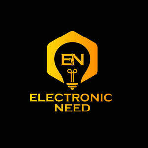

Trade Mark Journal No.2025/041 10 October 2025
UK00004270138 26 September 2025 (11)

- Class 11
- Electric lights; Electric fairy lights; Electric lighting; Electric night lights; Electric holiday lights; Electric lamps; Lamps (Electric -); Electric torches for lighting; Light bulbs, electric; Electric light bulbs; Electric bulbs; Electric lanterns; Electric incandescent lamps; Electric flashlights; Lights, electric, for Christmas trees; Christmas trees (Electric lights for -); Electric lights for Christmas trees; Electric lamp bulbs; Electric lighting fixtures; Flourescent electric light bulbs; Electric torches; Electric candles; Electric lighting installations; Installations for electric lighting; Dynamo lights for vehicles; Solar lights; Electric discharge lamps; Electric lights for festive decorations; Gas lights; Filaments for electric lamps; Battery-operated electric candles; Electric light fittings; Pocket electric lamps; Electric apparatus for lighting; Electric lighting apparatus; Sconces [electric light fixtures]; Electric discharge tubes for lighting; Discharge tubes, electric, for lighting; Tubes (Discharge -), electric, for lighting; Lights and lamps for vehicles; Electric candelabras; Lights for incandescent lamps; Lights for automobiles; Automobile lights; Lights for gas-discharge lamps; Christmas tree ornaments for illumination [electric lights]; Light emitting diode lights for automobiles; Fluorescent lights; Vehicles (Lights for -); Lights for vehicles; Electric track lighting units; Electrical light bulbs; Electric heaters; Roof lights [lamps]; Electric indoor lighting installations; Bicycle lights; Electrical lamps; Decorative electric lighting apparatus; Strings of lights [rope lights]; Electrical lamps for indoor lighting; Electric indoor lighting apparatus; Bicycle dynamo lights; Vehicle lights; Electrical lamps for outdoor lighting; Electric fiber lighting apparatus; Electric fires; Motorcycle lights; Electric rotisseries; Electric grills; Electric kettles; Kettles, electric; Tail lights for vehicles; Electric toasters; Electric heating cables; Brake lights for vehicles; Halogen lamps for incorporation into electric cookers; Strobe lights [decorative]; Electric hand lamps [other than for photographic use]; Klieg lights; Radiators, electric; Electric radiators.
Electronic Need Ltd